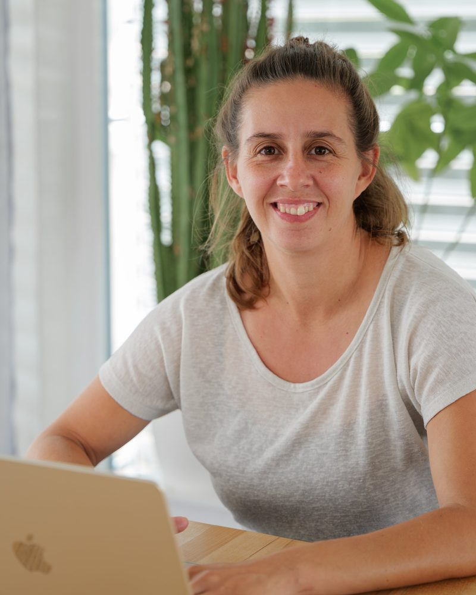

Hallo, ich bin
Mirjam
Gämperli
Projektmanagerin, Tennisspielerin, Organisationstalent und Weltenbummlerin. Ich bringe Struktur in Projekte und Herz in alles, was ich tue.

Menschen, Projekte und Leidenschaft
Ich bin Mirjam – eine Person, die immer in Bewegung ist, sei es auf dem Tennisplatz, unterwegs in der Welt oder mitten in einem spannenden Projekt. Struktur, Kreativität und Enthusiasmus sind meine Werkzeuge.
Ob ich Turniere organisiere, Teams durch komplexe Projekte führe oder neue Webseiten designe – ich bringe Herz und Präzision in alles, was ich tue.
- IPMA Level C
- Zertifizierte Projektmanagerin
- 10+ Jahre
- Tennis mit Leidenschaft
- Seit 2018
- Offizielle bei Swiss Tennis
«Gut organisiert ist halb gewonnen – die andere Hälfte ist Leidenschaft.»
Was ich mache
-
Projektmanagement
Von der Idee bis zum Abschluss – ich halte Fäden zusammen, setze Prioritäten und bringe Teams ans Ziel. Strukturiert, lösungsorientiert, zuverlässig.
-
Tennis spielen
Tennis ist mehr als Sport für mich – es ist Leidenschaft, Disziplin und ein unschlagbares Gefühl, wenn der Ball perfekt sitzt. Auf dem Platz gebe ich alles.
-
Turniere leiten
Tennisturniere zu organisieren ist meine Art, Leidenschaft und Organisationstalent zu verbinden. Jedes Turnier ist ein Erlebnis – für alle Beteiligten.
-
Organisieren
Chaos in Ordnung verwandeln? Das ist mein Element. Ich liebe es, Abläufe zu optimieren, Dinge zu planen und dafür zu sorgen, dass alles reibungslos läuft.
-
Reisen
Neue Kulturen, neue Menschen, neue Perspektiven. Reisen ist meine Art, die Welt zu verstehen und mich selbst immer wieder neu zu entdecken.
-
Webseiten designen
Websites sollen nicht nur funktionieren – sie sollen begeistern. Ich gestalte digitale Erlebnisse, die klar, schön und durchdacht sind.
Werdegang
Referee Swiss Tennis
Swiss Tennis
WeiterbildungWeb Development & Coding
Basics of Web Development & Coding Specialization · University of Michigan / Coursera
Weiterbildung Zertifikat ansehenSicherheitsbeauftragter (SiBe)
Qualitätswerk GmbH
WeiterbildungCAS Projektmanagement
Weiterbildung im Projektmanagement
WeiterbildungOfficial Swiss Tennis
Swiss Tennis
WeiterbildungTätigkeiten
Lizenzierte Offizielle bei Swiss Tennis mit jährlicher Leitung mehrerer Tennisturniere – von der Planung und Ausschreibung bis zur Durchführung und Nachbereitung.
Bachelor of Science ZHAW
Lebensmitteltechnologie · Wädenswil
BachelorMatura
Sportgymnasium Davos
SchulabschlussSenior Projektmanager:in
Selecta
AktuellTätigkeiten
Leitung und Steuerung komplexer Projekte mit Fokus auf Projektmanagement und -koordination in einem internationalen Unternehmensumfeld.
Projektmanager:in
Selecta
AnstellungTätigkeiten
Eigenverantwortliche Planung, Koordination und Umsetzung von Projekten sowie enge Zusammenarbeit mit internen und externen Stakeholdern.
Leiterin Support / Betriebsverantwortliche Sicherheit & Umwelt
bardusch AG
FührungsrolleTätigkeiten
Führung des Support-Teams sowie Übernahme der betrieblichen Verantwortung für die Bereiche Sicherheit und Umwelt am Standort Basel.
Projektmitarbeiterin QM-Reinraum
bardusch AG
ProjektTätigkeiten
Mitarbeit im Qualitätsmanagement mit Fokus auf Reinraumprozesse und Qualitätssicherung.
Administration
Tennisschule Aarau West
AnstellungTätigkeiten
Koordination des Tagesbetriebs, Kundenkommunikation, Abrechnung sowie Mitarbeit bei der Organisation internationaler Tennisturniere und der Pflege der Firmenwebsite.
Praktikantin Inhaltsentwicklung
Chocolat Frey AG
PraktikumTätigkeiten
Mitarbeit bei der Entwicklung neuer Produkte und Einblick in die Produktionsprozesse der Confiserie-Industrie.
Lass uns reden
Du hast ein Projekt, eine Idee oder einfach Lust auf ein Gespräch? Ich freue mich darauf.
mirjam.gaemperli@gmail.com